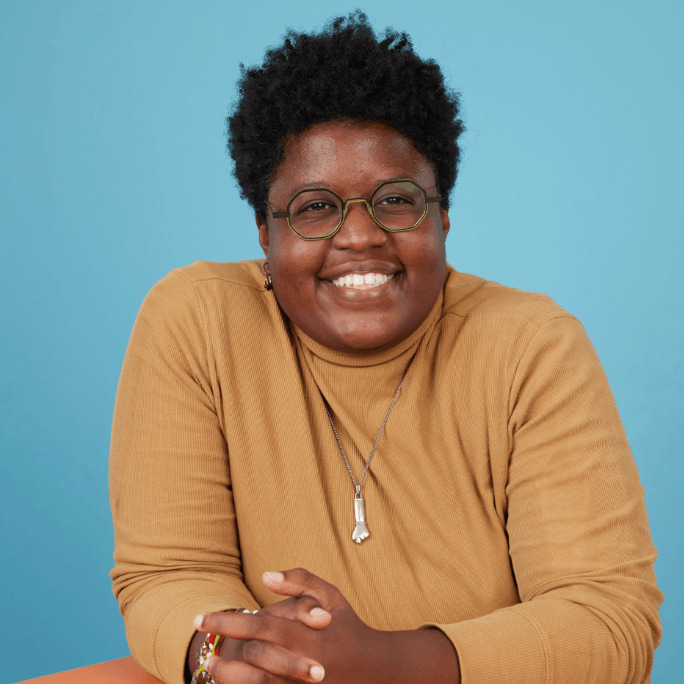

Computação da Hora
Canal no YouTube, também conhecido como Computação Sem Caô, que explica conceitos e pensamento computacional com linguagem acessível. A ideia surgiu quando ela tentava explicar para a avó o que faz uma cientista da computação.
Cientista da computação, pesquisadora e hacker antirracista.
Ela defende que a computação é para todos e investiga como as tecnologias tratam pessoas negras.

Ana Carolina Silva das Neves da Hora, conhecida como Nina da Hora, nasceu em 1995 em Duque de Caxias, na Baixada Fluminense, no Rio de Janeiro. Ela é cientista da computação formada pela PUC-Rio e mestra pela UNICAMP.
Sua área de pesquisa é a ética e a justiça na inteligência artificial. Na UNICAMP, ela estudou como sistemas de reconhecimento facial e de visão computacional podem ser auditados e questionados. Hoje também atua como pesquisadora no Centro de Tecnologia e Sociedade da FGV.
Nina conta que desde os 3 anos dizia que queria ser cientista. Aos 12 anos, ganhou o primeiro computador, e foi aí que o interesse pela computação ficou mais forte. Ela cresceu na Baixada Fluminense, criada por mulheres da família, e entrou na faculdade enfrentando a pressão de passar em universidades com notas de corte altas.
Durante a graduação, percebeu que precisava provar o tempo todo que sabia o que estava fazendo. Dessa experiência nasceu a vontade de explicar computação de um jeito simples e de abrir espaço para outras pessoas negras na área.
Em março de 2022, recebeu o Prêmio Nise da Silveira, na categoria Tecnologias, concedido por voto popular pela Secretaria de Políticas para as Mulheres do Rio de Janeiro.
Canal no YouTube, também conhecido como Computação Sem Caô, que explica conceitos e pensamento computacional com linguagem acessível. A ideia surgiu quando ela tentava explicar para a avó o que faz uma cientista da computação.
Podcast que conta a história de cientistas africanos e de legados negros na ciência, com entrevistas. Ela reuniu mais de 400 nomes de cientistas durante a pesquisa para o projeto.
Centro de pesquisa fundado e dirigido por Nina, dedicado aos direitos digitais e a uma tecnologia mais justa e decolonial.